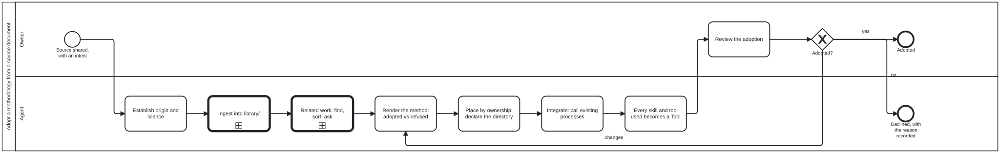

Generated from
cat-harness/processes/library/methodology-from-source.bpmnbygen-processes-viz.ts— do not edit here. All processes
Adopt a methodology from a source document
Process_MethodologyFromSource · advisory · 8 step(s)
Adopt the method of a shared paper, book or standard: origin and licence, ingestion, what is adopted and refused, placement by ownership, integration by calling existing processes, and the owner’s review. The general process an agent follows when someone shares a paper, book or standard and asks for its method to be used: establish origin and licence, ingest it, render what the method says with what is adopted and refused, place it by ownership, integrate it into the processes that already exist by calling them rather than copying them, make every skill and tool it uses a declared Tool, relate it to existing beans and issues, and put the adoption to the owner. Written 2026-09-23 while adopting WireGen (arXiv:2312.07755) as the worked case. Operating skill: adopt-methodology-from-source; the adoption rules themselves are folio-assistant’s methodology-adoption.

How it connects
- Called by: no call activity names this process
- Calls: Basic ingestion — an upload to an asset catalogued in library/, Related work: find, sort, summarize, ask to coordinate
- Presented on: no docs page section shows this diagram
- Running instances: none recorded
Lanes — who acts
| lane | role | what it does here |
|---|---|---|
| Owner | user |
Shares the source and the intent in chat, answers the coordination question, and decides the adoption. Only the owner accepts an adoption or moves a proposal’s status. |
| Agent | authoring-agent |
Does every step between the share and the review, and records each decision it made with its reason, so the owner reviews a record rather than an impression. |
Steps
1 of 8 step(s) carry no documentation — activity-documented lists them.
| step | lane | skill / sub-process | what it does |
|---|---|---|---|
Establish origin and licenceA_Origin |
Agent | adopt-methodology-from-source |
Authors, publication, identifier, and the licence the source itself states. No stated licence means reference only: headings, page ranges and a summary in our own words; the file stays in uploads/ (git-ignored) pinned by checksum. A method with no origin is a house process; write a skill instead. |
Ingest into library/Call_Ingest |
Agent | calls Basic ingestion — an upload to an asset catalogued in library/ | The harness’s basic ingestion flow (document-ingestion.bpmn, Process_Ingestion): the source is accepted, its metadata goes into the KG, and it is catalogued in library/ — held if materialized, recorded as referenced if not. Since placement PR6 (bean apcg) the flow makes no content-type decision: reading a document into sections and blocks — choosing the rung mechanically (embedded outline, pages, OCR), and writing section text only when the licence allows it — is a refinement in the layer above, which calls this same flow first. |
Related work: find, sort, askCall_RelatedWork |
Agent | calls Related work: find, sort, summarize, ask to coordinate | Search beans, issues and open PRs for work the method touches, categorize and summarize them, and ask the owner whether and how to coordinate. CRDM calls the same sub-process. |
Render the method: adopted vs refusedA_Render |
Agent | methodology-adoption |
What the source says, section by section, then a table of what this platform adopts and what it refuses, each with a reason. Extensions beyond the source (such as web plus mobile where the paper studied mobile) are stated as ours. Reported results are not imported as facts. |
Place by ownership; declare the directoryA_Place |
Agent | methodology-adoption |
A domain-neutral method belongs to the harness and a domain method to the folio that owns the domain. If the session cannot write where it belongs, draft it where it can, say so in the file, and open a bean to move it. |
Integrate: call existing processesA_Integrate |
Agent | adopt-methodology-from-source |
The method’s steps become a process whose judgement points call the processes that already exist (adjudication, options analysis, review) by calledElement. Nothing is re-implemented. A needed change to an existing process becomes a bean against its owner. |
Every skill and tool used becomes a ToolA_Tools |
Agent | adopt-methodology-from-source |
Each script, CLI or checker the process relies on gets a Tool node in cat-harness/tools/index.ts that satisfies a named skill, validated by folio-assistant’s ToolDefinitionSchema. |
Review the adoptionO_Review |
Owner | — | — |
Decisions
Every one of the 1 decision(s) is documented.
| decision | what decides it | branches |
|---|---|---|
Adopted?GW_Decision |
The reviewer’s decision on the adoption. yes adopts it; no declines with the reason recorded; changes goes back to A_Render, the step that writes the adopted-against-refused table, so the agent re-runs render, placement, integration and tools and the owner reviews the result again. Only the owner accepts an adoption. |
yes → Adopted no → Declined, with the reason recorded changes → Render the method: adopted vs refused |